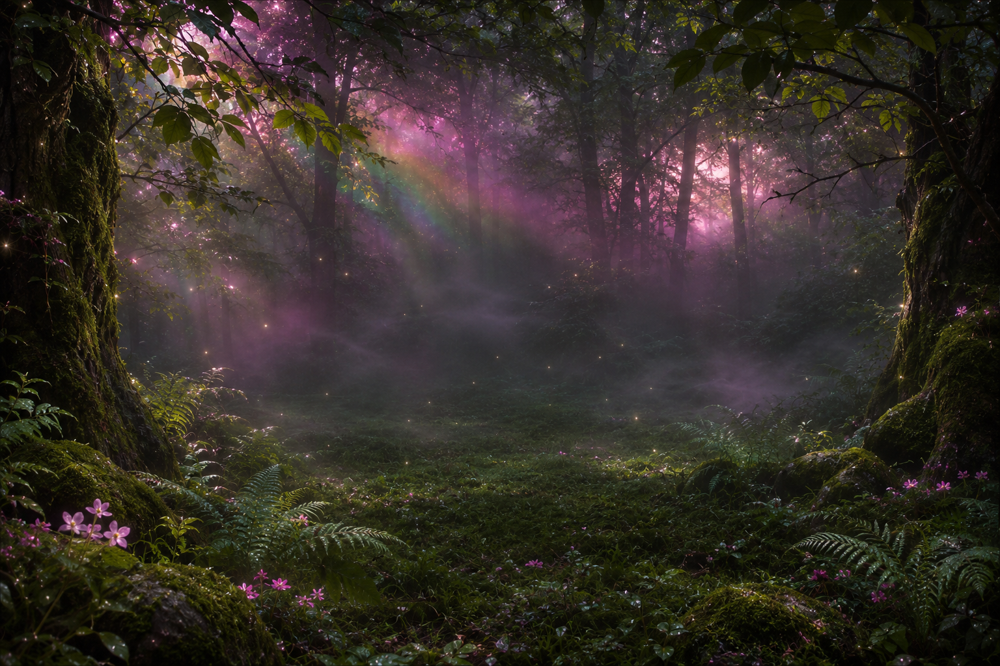

A LITTLE CORNER OF MY CREATIVE WORLD
Hello, I'm Emmy.
I'm Emmy Hedlund, based in Stockholm and studying IT, Media and Design at Södertörn University. I explore creative coding, interaction and generative visuals.
Explore my workSELECTED WORK · 2026
My project.
One project, a little bit of magic.

CREATIVE PROGRAMMING / INTERACTIVE ART
Forest Fairy Rave
An enchanted forest where movement becomes light, colour and sound.
A LITTLE ABOUT ME
Curious about creating.
I'm interested in the meeting point between technology and visual expression — especially how code can create playful, interactive experiences. This website is a place to share what I make.